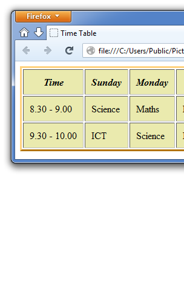
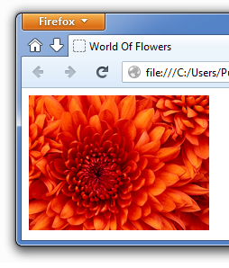

| පළමු කොටස | දෙවන කොටස | තෙවන කොටස |
|---|
| වගු ඇතුලත් කිරීම | ඡායාරූප ඇතුලත් කිරීම |
 වෙබ් පිටු සකස් කිරීමේ දී වගු යොදා ගැනීමට සිදු වේ. වගු නිර්මාණය කිරීමේ දී යන උපදේශ කේතය භාවිත කරන අතර එම වගුව අවසන් කිරීම සඳහා යෙදා ගනී. සෑම පේළියක් හඳුන්වාදීම සඳහා (Table Row) උපදේශ කේතය යෙදා ගත යුතුය. සෑම කොෂයක් සඳහාම, එනම් දත්ත වෙන වෙනම ඇතුළු කිරීම සඳහා උපදේශ කේතය යෙදා ගත යුතුය. අවශ්ය වූ විට දී වගුව සඳහා මාතෘකා යෙදීමට (Table Heading) උපදේශ කේතය යෙදා ගැනේ. වගුවේ දාරයේ ප්රමාණය සඳහා කේතය තුළ ලෙස ප්රමාණය දැක්විය යුතුය.
තව ද වගු ඇතුළත් කිරීමේ දී කෝෂ (දත්ත ඇත්ළත් වන කවුළු) එක්නෙකට බද්ධ කොට නිර්මාණය කිරීමට සිදු වේ. එවැනි අවස්තා වල දී පහත ක්රමවේද අනුගමනය කළ හැක.
අවශ්ය වූ විට වගු සඳහා එයට නියමිත වූ මාතෘකා යෙදවීමට හැකිය. මෙම මාතෘකා,
ඕනෑම වගුවක් සඳහා ඒ වටා රේඛා හෝ දාර දැක්විය යුතුය. මේ සඳහා යොදා ගන්නා අගයේ ප්රමාණය Pixel වලින් යෙදේ.
මේ සඳහා වගුවට අදාළ සියලු කේත දෙපසට ලෙස යෙදිය යුතුය.
මෙහි දී එක් කොෂයක් තුළ ඇති දත්ත සහ එම කෝෂයේ දාරය අතර දුර නිෂ්චිත ප්රමණයක් ලබා දිය හැක.
මේ සඳහා පහත කේතය යොදා ගනී.
වගුවෙහි මුලු දිග සැකසීම ක්රම දෙකකට සිදු කළ හැක.
වගුවක දත්ත පෙළගැස්වීම සඳහා ආකාර දෙකක් භාවිත වේ.
 වෙබ් පිටුවලට ඡායාරූප චිත්ර ඇතුලත් කිරීමට හැකිය. ඒ තුළින් වෙබ් පිටුවේ මූල්යමය හා ගුණාත්මක වටිනාකම වැඩි වී තිබේ. එලෙසම වැඩියෙන් චිත්ර හො ඡායාරූප යෙදා ගැනීමෙන් එම තොරතුරු හුවමාරු කිරීමට වැඩි කාලයක් ගත වේ. වෙබ් පිටු සකස් කිරීම සඳහා භාවිතා කරනු ලබන චිත්ර හෝ ඡායාරූප පරිගණකවල තැම්පත් කර තැබීම සඳහා අනුමත කරගනු ලැබූ ප්රචලිත ආකාර 2කි.
මෙලෙසම අවශ්ය චිත්ර තමන්ගේ පරිගණකයේ පමණක් නොව වෙනත් තැනක ඇති පරිගණකයක හෝ අන්තර්ජාලයට සම්බන්ධ වී ඇති ඕනෑම පරිගණකයක සිට ද ලබා ගත හැක. පරිගණකගත කරන ලද ඡායාරූපයක් වෙබ් පිටුවට ඇතුලත් කිරීම සඳහා යෙදා ගන්නා විට නම් වූ උපදේශ කේතය භාවිත වේ. මෙහි දී උපදේශ කේතය යටතේ src නම් අනු උපදේශ කේතය ඔබ ඇතුලු කිරීමට බලාපොරොත්තු වන ඡායාරූපයෙහි නම හා එහි ගොනු දිගුව ආදේශ කළ යුතුය.
http://schoolnet.lk/science.jpg